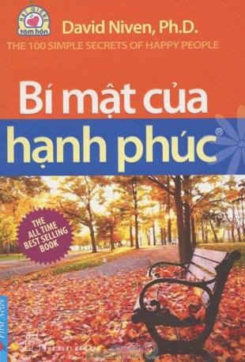

Đọc - ngẫm
Con người cảm thấy tự tin nhất khi họ được bộc lộ tính cách riêng của mình, chứ không phải khi họ làm theo những khuôn mẫu được chấp nhận rộng rãi. Những người đàn ông thường cho rằng mình phải hành động cứng rắn, cũng như những phụ nữ lại tin rằng mình phải cư xử dịu dàng, nhịn nhục. Chính những suy nghĩ, định kiến ấy sẽ khiến họ bị đóng khung trong những khuôn khổ giả tạo và mất dần những cá tính rất riêng của họ.
Viện Sức khỏe Quốc gia đã đưa ra tài liệu chứng minh rằng, khi cùng chịu những nỗi đau về tinh thần hay thể xác, đàn ông ít để lộ ra trạng thái đau buồn của mình hơn so với phụ nữ. Bởi từ nhỏ, nam giới được dạy dỗ là phải luôn tỏ ra cứng rắn, không nên biểu lộ tình cảm của mình.Trong khi đó, phụ nữ lại được dạy bảo là phải cởi mở hơn.Tuy nhiên, không phải ai trong chúng ta cũng đều thích hợp với những khuôn mẫu đó.
Một người đàn ông muốn khóc trước một nỗi đau, hay tại đám tang nhưng lại cố ghìm nén nó lại. Vậy thì anh ta đâu phải là một người thật sự cứng rắn. Một người phụ nữ ép mình phải cởi mở, tươi cười trước tất cả những người khác - trong khi bản chất cô lại là người luôn dè dặt, sống nội tâm - cô sẽ chẳng cảm thấy vui hơn vì đã phải xử sự trái ngược với bản chất vốn có của mình.
Bạn nên hành động và cư xử theo cách mà bạn cho là phù hợp, chứ không nên theo một khuôn mẫu mà bạn nghĩ là những người khác cho là đúng.
 "Bí mật của hạnh phúc"Chúng ta là những con người rất riêng với những tư chất và ước mơ khác nhau. Sở thích của người này chưa hẳn là sở thích của người khác, ước mơ của người này không phải là ước mơ của người khác.Trong từng giai đoạn của cuộc đời, bạn hãy luôn là chính mình.Điều đó sẽ giúp bạn hài lòng hơn về bản thân và về cuộc sống xung quanh bạn.
Hãy tìm đến với cuốn sách “Bí mật của hạnh phúc” để bạn được trải lòng, bạn là chính bạn, không phải là bản sao của bất kì ai.
Ramanaiah, Detwiler và Byravan